Lesson content · 课文
Lesson 34: What are they doing? · 他们在做什么？
Listen and answer the questions. 听录音并回答问题。
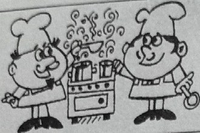
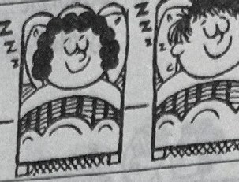
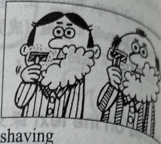
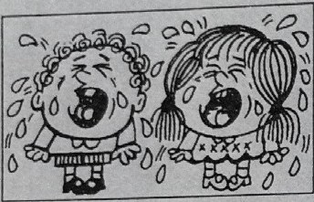
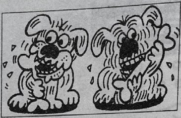
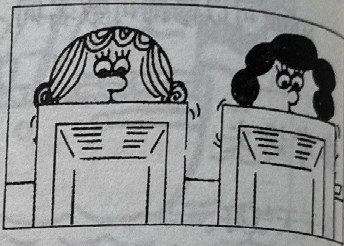
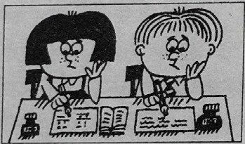
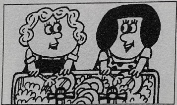
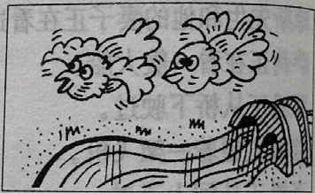
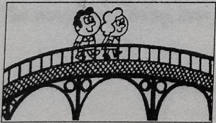
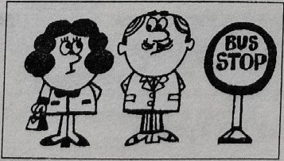
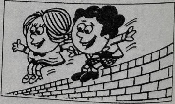
New words and expressions · 生词和短语
| Word · 单词 | Pronunciation · 音标 | Meaning · 词义 |
|---|---|---|
| sleep | /sliːp/ | v. 睡觉 |
| shave | /ʃeɪv/ | v. 刮脸 |
| cry | /kraɪ/ | v. 哭，喊 |
| wash | /wɒʃ/ | v. 洗 |
| wait | /weɪt/ | v. 等 |
| jump | /dʒʌmp/ | v. 跳 |
Practice · 课文练习
Written exercises · 书面练习
A. Complete these sentences · 现在进行时
Complete these sentences. 模仿例句用现在进行时完成以下句子。
注意以下例句：如果动词是以 e 结尾，变成现在分词时要去掉 e，然后再加 -ing。
Example · 例句
take — taking
Take … He is taking his book.
-
textbook: A. Complete these sentences · 现在进行时 — Type … She is ____ a letter.
-
textbook: A. Complete these sentences · 现在进行时 — Make … She is ____ the bed.
-
textbook: A. Complete these sentences · 现在进行时 — Come … He is ____.
-
textbook: A. Complete these sentences · 现在进行时 — Shine … The sun is ____.
-
textbook: A. Complete these sentences · 现在进行时 — Give … He is ____ me some magazines.
B. Questions and answers · 提问并回答
Write questions and answers. 模仿例句提问并回答。
Example · 例句
the children / looking at the boats on the river
What are the children doing?
They’re looking at the boats on the river.
-
textbook: B. Questions and answers · 提问并回答 — the men / cooking a meal
-
textbook: B. Questions and answers · 提问并回答 — they / sleeping
-
textbook: B. Questions and answers · 提问并回答 — the men / shaving
-
textbook: B. Questions and answers · 提问并回答 — the children / crying
-
textbook: B. Questions and answers · 提问并回答 — the dogs / eating bones
-
textbook: B. Questions and answers · 提问并回答 — the women / typing letters
-
textbook: B. Questions and answers · 提问并回答 — the children / doing their homework
-
textbook: B. Questions and answers · 提问并回答 — the women / washing dishes
-
textbook: B. Questions and answers · 提问并回答 — the birds / flying over the river
-
textbook: B. Questions and answers · 提问并回答 — they / walking over the bridge
-
textbook: B. Questions and answers · 提问并回答 — the man and the woman / waiting for a bus
-
textbook: B. Questions and answers · 提问并回答 — the children / jumping off the wall
Practice worksheet · 配套练习
A. Questions and answers
Match the questions and answers. Answers: a. They’re running after a cat. b. It’s flying to America. c. The women are. d. Those men? They’re shaving. e. Yes, they are. f. The children are in the garden. They are climbing trees. g. Mr. Jones is. h. The girls are typing letters. 为问句选择正确的答案。
Example · 例句
What are those men doing? — Those men? They’re shaving.
-
worksheet: A. Questions and answers — Where is that plane going?
-
worksheet: A. Questions and answers — What are the girls doing?
-
worksheet: A. Questions and answers — Where are the children? And what are they doing?
-
worksheet: A. Questions and answers — What are the dogs doing?
-
worksheet: A. Questions and answers — Who is walking over the bridge with his family?
-
worksheet: A. Questions and answers — Who are washing the dishes?
-
worksheet: A. Questions and answers — Are the children doing their homework?
Original images · 原图对照
Expand a page to compare it with the transcription. Open the original in a new tab to zoom in.
展开原图核对文字，也可以在新标签页打开原图放大查看。
Lesson text and oral practice · 课文与口头练习
Open original · 打开原图 ↗ Download original · 下载原图

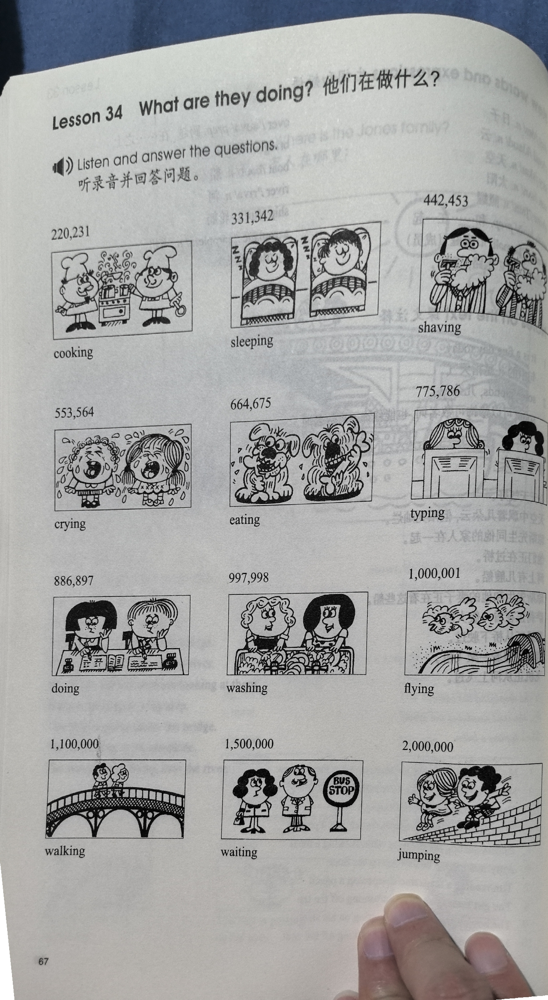
Vocabulary, notes and written exercises · 生词、注释与书面练习
Open original · 打开原图 ↗ Download original · 下载原图

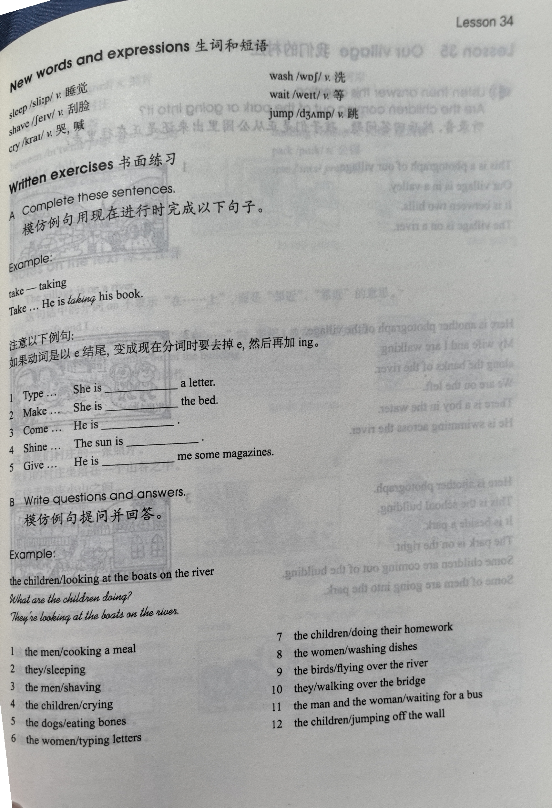

Grammar practice · 语法练习
I. Answer the questions using the cues
- What are you looking at? (we/the boats)
We're looking at the boats. Where are the boats? (on the river) They are on the river.
- What are Linda and her sister waiting for? (they/the bus)
Where are they waiting? (at the bus stop)
- What are the children doing? (they/their homework)
Where are they doing their homework? (in their room)
- What are the dogs eating? (they/bones)
Where are they eating the bones? (in the garden)
- What are the girls doing? (they/look at a dress)
What colour is the dress? (red)
- What are you doing? (we/wait for the next class)
Who is your teacher? (Miss Scott)
- What are Mr. and Mrs. Wilson doing? (they/watch television)
What are they watching? (the news)
- What are the babies doing? (they/sleep)
Where are they sleeping? (in their bedroom)
II. Write the correct -ing form of the verbs
- turn
- shine
- run
- take
- make
- walk
- type
- fly
- put
- empty
- dust
- cry
- shave
- shut
Your notes and answers
Use this space for longer responses or exercises that do not have an individual answer box.